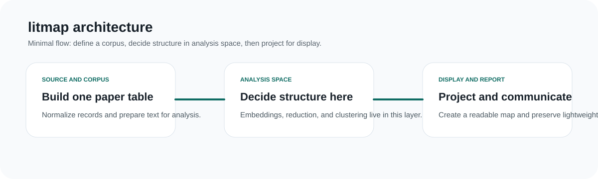

Tutorials
Long-form case studies with cluster maps, tables, diagnostics, and interpretation.
Open TutorialsIt organizes one run as a canonical paper table, an analysis-space clustering workflow, a separate display-space projection, and a set of review-ready artifacts that stay readable after the run is over.
Long-form case studies with cluster maps, tables, diagnostics, and interpretation.
Open TutorialsInstall the package, inspect the CLI, and understand the run layout.
Open Getting startedSee the public Python surface exposed by the package.
Open APIRead the architectural decisions behind the package.
Open DesignBrowse the implementation, issues, and project history on GitHub.
Open RepositoryUse the GitHub Pages build as the main static entry point.
Open Docs
The shortest way to understand the package is to see the split between source and corpus, analysis space, and display and review outputs.
Open diagramThe package currently ships case-study articles for cancer immunotherapy, ADC, PROTAC, breast cancer, and lung cancer.
Open tutorial hub{kind=link}